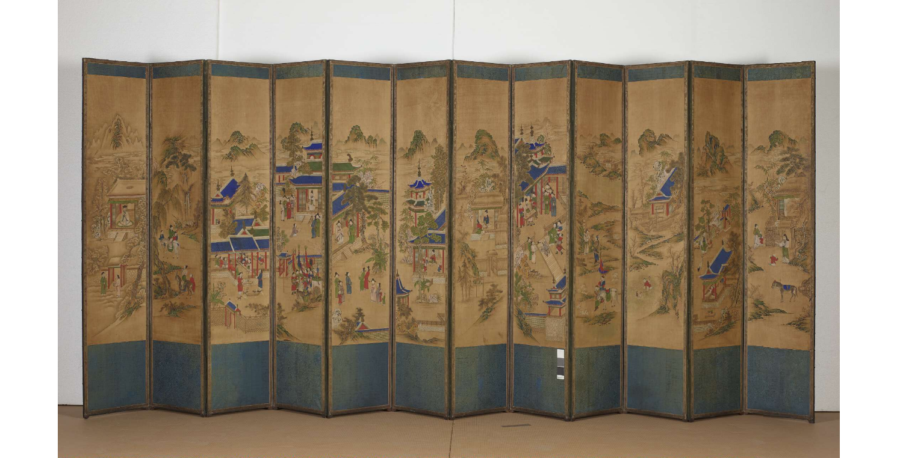

제 3장. 설화화(說話畵)
설화화(說話畵),
이름부터 낯선 이 작품들...
도대체 정체가 뭘까요?

오륜행실도 병풍 五倫行實圖 屛風
설화화를 알아보기 전
먼저, 설화란 전승되어 오는 신화, 전설, 민담 등을 설화라고 하며,
설화화는 이러한 설화의 내용을 함축하여 화폭에 옮겨놓은 그림을 이릅니다.

'설화화'는 예술성이나 장식적인 성격이라기보단
줄거리의 표현에 중점을 두고 그린 것이 특징인데요.
종교적인 내용부터 교훈적인 내용, 충효를 나타내는 내용,
애정을 다룬 내용까지 다양하게 담아냈습니다.
설화화를 크게 분류해보자면,
유명 인물에 관한 고사를 토대로 하여 그린 고사인물도와 고사설화도,
무속에서 추앙되던 속신들을 주인공으로 한 신선설화도,
<구운몽>, <춘향전>, <삼국지>와 같은 소설을 내용으로 한 소설설화도로 나누어 볼 수 있습니다.
이번엔 소설설화도 중 <춘향전도>와 <구운몽도>를 함께 살펴볼까요?

춘향전도8폭병풍
고전소설 춘향전을 이야기 순서대로 그린 '춘향전도8폭병풍'은
그네 뛰는 춘향에게 방자를 보낸 뒤 분위기를 슬쩍 살피는 이몽룡을 담은 1폭부터
춘향과 이몽룡이 모든 역경을 딛고 한양으로 떠나는 모습을 그린 8폭까지
인물 표정과 움직임이 생생하게 표현된 작품입니다.
구운몽도(九雲夢圖)